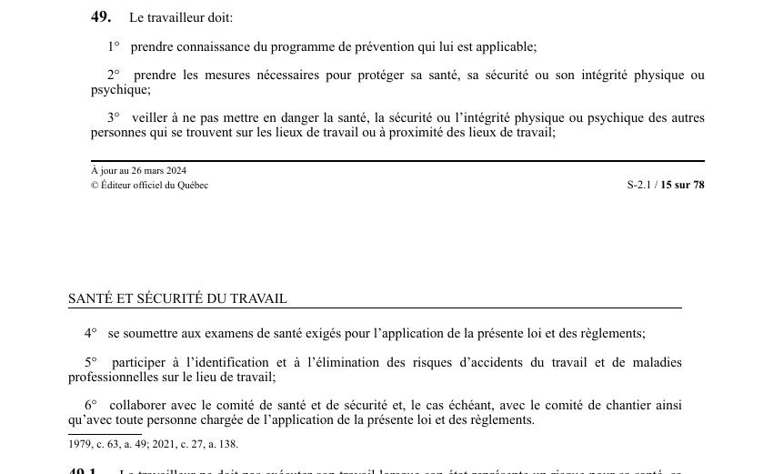

Tes six obligations en santé et sécurité
🌐 LegisQuébec · 📄 PDF officiel (page 15)
Texte officiel
Le travailleur doit:
1° prendre connaissance du programme de prévention qui lui est applicable;
2° prendre les mesures nécessaires pour protéger sa santé, sa sécurité ou son intégrité physique ou psychique;
3° veiller à ne pas mettre en danger la santé, la sécurité ou l’intégrité physique ou psychique des autres personnes qui se trouvent sur les lieux de travail ou à proximité des lieux de travail;
4° se soumettre aux examens de santé exigés pour l’application de la présente loi et des règlements;
5° participer à l’identification et à l’élimination des risques d’accidents du travail et de maladies professionnelles sur le lieu de travail;
6° collaborer avec le comité de santé et de sécurité et, le cas échéant, avec le comité de chantier ainsi qu’avec toute personne chargée de l’application de la présente loi et des règlements.
Texte de l’article 49 LSST, extrait de la couche texte du PDF officiel (page 15), sans OCR ni retouche. La capture ci-dessous et le PDF font foi.


Toucher l'image pour l'agrandir🔗 Ouvrir a cette page : LSST.pdf : page 15 · texte a jour au 26 mars 2024
Voir aussi
- art. 48.1 : protocoles d'identification des dangers · définition : le directeur national de santé publique élabore et met à jour les protocoles visant l'identification des dangers aux fins de l'exercice des droits prévus aux articles 40, 41, 46 et 47 ; la Commission.
- art. 48.2 : publication protocoles par Commission · les protocoles élaborés par le directeur national de santé publique sont transmis à la Commission qui les publie sur son site Internet.
- art. 49.1 : interdiction travail facultés affaiblies · interdiction : le travailleur ne doit pas exécuter son travail lorsque son état représente un risque pour sa santé, sa sécurité ou son intégrité physique ou psychique, notamment en raison de facultés affaiblies par l'alcool, la drogue, incluant le cannabis, ou une substance similaire.
- art. 50 : droit employeur formation information · champ d'application : l'employeur a notamment le droit, conformément à la présente loi et aux règlements, à des services de formation, d'information et de conseil en matière de santé et de sécurité du travail.
- 🔧 Modifié par : LMRSST · Article modificateur de la LMRSST.
Questions sur ta lecture
Ces questions t'aident à retenir l'essentiel. Tu peux relire la page et recommencer autant de fois que tu veux : rien n'est envoyé avant que tu attestes.
Pages qui pointent ici (1)
- Postures, manutention, vibrations Les risques et les bons réflexes